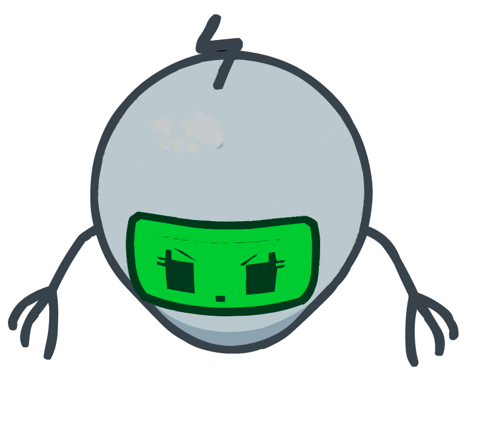

BLIGHTBOT C

WELCOME.
Welcome to Blightbot C's page. This page is very similar to the other bots because there isn't much difference between them. We can still tell you battle information and more.
MODEL INFORMATION
| Attribute | Value |
|---|---|
| Full Name | Blightbot Model C |
| Pronouns | It/It |
| Occupation | Works for Bubbleblight. |
| Species | Robot |
DESCRIPTION
Blightbot C was the third robotic model developed by the villain Bubbleblight. Its goal is to destroy any residents of Beringstern or anyone that crosses its path. There are three other Blightbot models with the same purpose.
INTERVIEW
What do you want the most?
I WANT TO TOUCH THE LASERS!
OK…anything else?
I WANT THE LASERS!
If you were able to have one ability what would it be?
I WANT TO LASER !
Any advice to the people reading?
TOUCH THE LASERS!
> (Due to the interviewer being stupid and actually touching the lasers, the interview had to end.)
BATTLE INFORMATION
Blightbot C has a bit of a different way of attacking than the first two bots.
ATTACKS
Similar to Blightbot B, this one attacks with a laser. However, it sends out an orb of electricity that shoots lasers out. Just do the same thing you've done earlier.
SPARE
Unfortunately, Blightbot C lacks a proper spare switch. However, it will occasionally shout its iconic phrase, "I want to touch the lasers!" Try to redirect the laser attack to the bot.